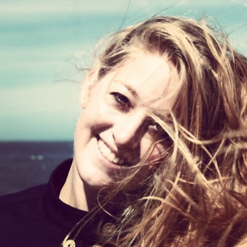

My name is Alessandra Caroline and I am currently training to become a web developer. This website will come along with my journey at Dev Bootcamp. I studied Business Administration and Finance and worked in a young fintech startup. I have always been fascinated with technology and digital innovation and therefore started working in this field. Soon I was wondering whether I really want to be in a position where I may be dealing with extremely exciting topics, but never actually implement them and truly understand the mechanics. I realized that, with my business degree, I may be able to connect the dots between the commercial business side, product and technology, build a business and sell a product, but I am not able to actually drill deep into problems, understand them thoroughly, or actually build a product that is the cause of my fascination. Starting Dev Bootcamp, I am now determined to enter this field and learn coding. What I love most about coding so far: It is just so logical and for me personally, that makes it the most compelling work and skill set to have in the digital age.